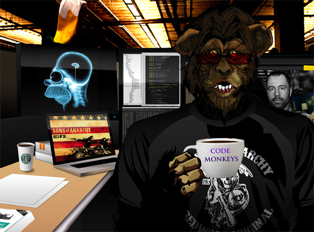

Управление устройством с помощью MonkeyRunner
Утилита MonkeyRunner предоставляет API для написания скриптов, которые управляют Android устройстами. С помощью MonkeyRunner можно написать скрипт на языке Python, который устанавливает Android приложение, запускает его, имитирует действия пользователя, снимает скриншоты и сохраняет их на компьютер. Утилита MonkeyRunner использует Jython для выполнения скриптов.

Домашняя страница утилиты MonkeyRunner и описание API: developer.android.com/tools/help/monkeyrunner_concepts.html
Чтение логов с помощью MonkeyRunner
Файл log.py:
# coding: utf-8
from com.android.monkeyrunner import MonkeyRunner, MonkeyDevice
def log(fn, device):
msg = device.shell('logcat -d')
f_log = open(fn, 'at')
if msg is None:
msg = 'None'
f_log.write(msg.encode('utf-8'))
f_log.close()
device.shell('logcat -c')
if __name__ == '__main__':
device = MonkeyRunner.waitForConnection()
device.shell('logcat -c') # Очищаем буфер логов
# ...
log('example.log', device) # Записываем логи
Запуск:
monkeyrunner log.py
Скрипт запишет логи в файл example.log в текущей директории.
Снятие скриншотов
Файл screen.py:
# coding: utf-8
from com.android.monkeyrunner import MonkeyRunner, MonkeyDevice
if __name__ == '__main__':
device = MonkeyRunner.waitForConnection()
image = device.takeSnapshot()
image.writeToFile('screenshot.png','png')
Запуск:
monkeyrunner screen.py
Скрипт снимает скриншот и сохраняет его в файл screenshot.png в текущей директории.
Пример управления устройством с помощью MonkeyRunner
Скрипт: monkeyrunner_test.py
# coding: utf-8
import time
from com.android.monkeyrunner import MonkeyRunner, MonkeyDevice
APK = "example.apk"
PACKAGE = "com.example.package"
ACTIVITY = "com.example.package.activity"
def log(fn, device):
msg = device.shell('logcat -d')
f_log = open(fn, 'at')
if msg is None:
msg = 'None'
f_log.write(msg.encode('utf-8'))
f_log.close()
device.shell('logcat -c')
if __name__ == '__main__':
device = MonkeyRunner.waitForConnection()
device.removePackage(PACKAGE) # Удаляем пакет, если он уже установлен
device.shell('logcat -c') # Очищаем буфер логов
device.installPackage(APK) # Устанавливаем приложение
log('install.log', device) # Записываем логи установки приложения
run_component = PACKAGE + '/' + ACTIVITY
device.startActivity(component=run_component) # Запускаем activity
time.sleep(10) # Ждем 10 сек
log('start.log', device) # Записываем логи запуска приложения
device.press('KEYCODE_MENU', MonkeyDevice.DOWN_AND_UP) # Открываем меню
screen = device.takeSnapshot() # Снимаем скриншот
screen.writeToFile('screenshot.png', 'png') # Сохраняем в screenshot.png
log('run.log', device) # Записываем логи тестирования приложения
device.removePackage(PACKAGE) # Удаляем пакет
log('uninstall.log', device) # Записываем логи удаление приложения
Запуск:
monkeyrunner monkeyrunner_test.py
Средства автоматизированного тестирования
Тестирование с помощью monkey
Представьте, что устройство попало в цепкие лапы очень активной и творческой обезьяны – утилита monkey призвана имитировать подобную ситуацию.
Утилита monkey входит в состав Android SDK. Утилита отправляет на устройство поток псевдо-случайных действий пользователя. Параметры командной строки задают количество действий пользователя, соотношение их типов и имя тестируемого пакета, чтобы, например, обезьяна не вышла за пределы тестируемого приложения и не начала рассылать SMS по всем контактам из адресной книги.
Примеры использования и перечень параметров приведены на домашней странице: developer.android.com/tools/help/monkey.html
Главное достоинство monkey – отсутствие затрат на поддержку. Кроме того, стресс-тестирование приложения потоком произвольных событий может обнаружить нетривиальные ошибки.
Недостатки тестирования утилитой monkey:
С помощью утилиты monkey можно без усилий протестировать любое приложение – это неплохая отправная точка. Возможно, что этот способ покажет адекватные результаты для конкретного приложения. Если же качество тестирования неудовлетворительное, то следует воспользоваться другими способами тестирования.
Тестирование с помощью MonkeyRunner
При помощи скриптов использующих MonkeyRunner API можно не только разработать основу для тестирующей системы, но и написать скрипты для тестирования конкретного приложения на конкретном устройстве.
Достоинства:
Недостатки:
Как правило, этот способ не оправдан – написание скриптов занимает много времени. Однако в частных случаях этот способ может сработать.
Тестирование с помощью getevent/sendevent
Утилиты getevent и sendevent позволяют записать последовательность действий пользователя, а затем воспроизвести эту последовательность. Утилиты находятся на самом Android-устройстве и не требуют для работы root-доступа.
Достоинства:
Недостатки:
Запись последовательности действий:
# Записываем последовательность событий
# выполняем действия на устройстве, по окончанию нажимаем Ctrl-C
adb shell getevent -t > events.txt
# Преобразуем последовательность в исполняемый скрипт
./decode_events.py events.txt > events.sh
# Загружаем скрипт на устройство
adb push events.sh /data/local/tmp/
# Устанавливаем права на запуск
adb shell chmod 755 /data/local/tmp/events.sh
# Запускаем скрипт
adb shell sh /data/local/tmp/events.sh
Скрипт: decode_events.py
#!/usr/bin/python
# coding: utf-8
USAGE = """Скрипт преобразует вывод команды getevent в исполняемый shell-скрипт,
воспроизводящий записанные действия с помощью команд sendevent и sleep.
Использование:
./decode_events.py input.txt > output.sh
"""
import re
import sys
# [ 43319.628481] /dev/input/event1: 0003 0039 ffffffff
# 48470-342082: /dev/input/event1: 0000 0000 00000000
_re = re.compile(r'[^\d]*(?P<sec>\d+)[.-](?P<msec>\d+)[:\]] (?P<device>[^:]+):'
' (?P<class>[0-9a-f]+) (?P<event>[0-9a-f]+) (?P<params>[0-9a-f]+)')
T_FIX = 0.1
last_time = None
if __name__ == '__main__':
if len(sys.argv) < 2:
print USAGE
sys.exit(1)
print '#!/bin/sh'
input_fn = sys.argv[1]
for line in open(input_fn, 'rt'):
m = _re.match(line)
if m is not None:
d = m.groupdict()
cur_time = float(d['sec']) + float(d['msec'][:2])/100
if last_time is not None:
diff_time = (cur_time - last_time)
if diff_time > 0.2:
print 'sleep %.2f' % (diff_time-T_FIX,)
last_time = cur_time
print 'sendevent', d['device'], int(d['class'], 16), \
int(d['event'], 16), int(d['params'], 16)
else:
print '#', line.strip('\n\r\t ')
На устройстве должны воспроизвестись записанные действия.
Анализ результатов
В результате тестирования приложения перечисленными выше способами мы получили логи и скриншоты. Теперь их нужно проанализировать на наличие ошибок.
Анализ логов
Для начала можно сделать поиск по подстрокам:
Список можно дополнять по мере выявления ошибок в ходе ручного тестирования.
Анализ скриншотов
В процессе тестирования вручную можно подготовить серию скриншотов в ключевых моментах тестирования, а затем сравнивать их с содержимым экрана в процессе автоматизированного тестирования. Это позволит определить, правильно ли идет процесс автоматизированного тестирования и выявлять ошибки.
Также полезно сравнивать скриншот до и после запуска приложения – это позволяет определять случаи, когда приложение аварийно завершается без сообщений на экране и в логах.
MonkeyRunner позволяет сравнить два скриншота с заданным допуском в процентах:
image1 = device.takeSnapshot()
# ...
image2 = device.takeSnapshot()
if image2.sameAs(image1, 0.1):
print 'image1 and image2 are the same (10%)'
К сожалению, в API MonkeyImage не предусмотрена функция загрузки из файла. Поэтому для сравнения сохраненных скриншотов придется писать свою функцию, например с помощью Python Imaging Library.
Сброс состояния устройства после тестирования
После тестирования приложения устройство нужно вернуть в первоначальное состояние.
Этого можно достичь несколькими путями:
Рассмотрим первый вариант, как наиболее адекватный.
Многократное нажатие кнопки «Назад»
Нажимаем кнопку «Назад» используя MonkeyRunner:
for i in xrange(0, 10):
device.press('KEYCODE_BACK', MonkeyDevice.DOWN_AND_UP)
time.sleep(0.5)
На практике этот вариант оптимален, так как имитирует поведение реального пользователя.